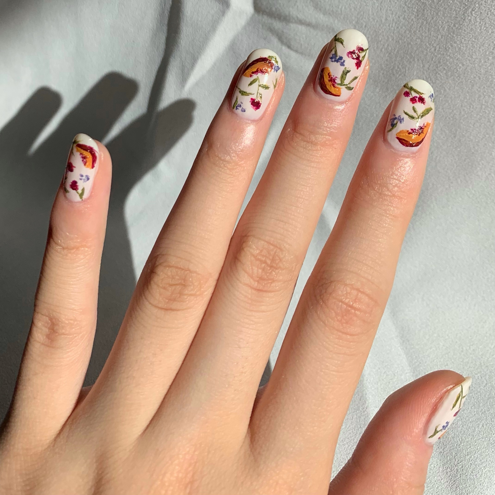
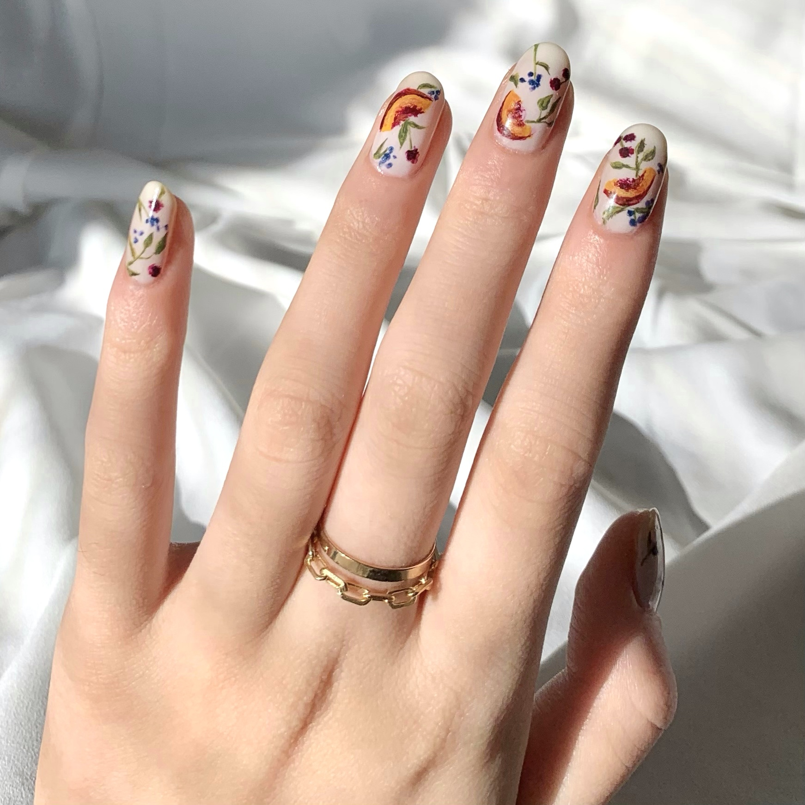

I. Fill in any remaining gaps with leaves, referencing the Little Flowers section again. This step is optional if you want a more minimal, sparse look to the overall design.
II. Wait 5 minutes after the previous step before applying a layer of top coat to all nails. This will smooth out any uneven texture that was created by layering the polish and prevent the polish from chipping. Make sure you don't push down too hard with the brush when applying top coat or the design may smudge!
III. Note that this design can vary depending on how you arrange each component and how you adjust the colors. Here is a previous version of the design where you can see that the colors are darker, and there is more shading. You can customize how you want everything to look based on you own tastes.
